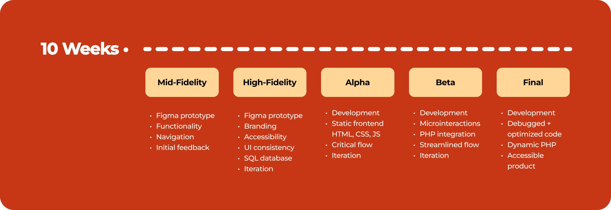

THE OVERVIEW
Date: Jan. 2025 - Mar. 2025
Roles: UX/UI Designer / Web App Developer
Tools: Figma, Figjam, Adobe After Effects, Adobe Illustrator, Jitter, Microsoft Teams, VSCode, Github, MySQL, phpMyAdmin
Coding Languages: HTML, CSS, JavaScript, PHP
Team: Fei Young, Maple Tieu, Sreeja Satish, Yen Luong, Yi Huan Yang
Our team designed and developed a mobile ordering app for Pete’s Little Lunchbox, simplifying the cluttered menu and ordering process while maintaining its signature red branding. Using Figma, we iteratively refined prototypes through user testing before implementing the design with HTML, CSS, JavaScript, PHP, and a MySQL database. To stay organized and efficient, we collaborated through Microsoft Teams and FigJam.
Over four rounds of user testing, we optimized key screens to ensure a seamless, intuitive experience. Positive feedback validated our approach, and future enhancements could include QR code scanning and dark/light mode options.
CONTEXT AND CHALLENGE

The Food Truck: Pete's Little Lunchbox
Pete’s Little Lunchbox is a breakfast and lunch food truck located at 33rd and Arch Street, serving a variety of meals to Drexel students and local workers.
Before starting this project, some team members were already familiar with Pete’s strong reputation in the community, as well as its lack of advertising and branding. This presented an exciting opportunity to design and develop a takeout app that captured the comfort and practicality of its quick, on-the-go service.
The Team: BeepBop
- Fei Young – Designer and Frontend Developer
- Maple Tieu – Designer and Data Architect
- Sreeja Satish – Project Manager and Data Architect
- Yen Luong – Backend Developer and Data Architect
- Yi Huan Yang – Project Manager and Designer
My Role: As the primary designer and secondary (front-end) developer, I conducted user research through user testing and interviews (acting as both a moderator and a notetaker) to inform intuitive, user-centered designs. I created a high-fidelity interactive prototype in Figma, utilizing components, variables, and auto-layout for scalable, pixel-perfect designs that can easily be translated into code during development. I prioritized accessibility, ensuring our designs passed color contrast tests and implementing readable text sizes and a visual hierarchy.
On the development side, I contributed to the frontend implementation, ensuring that the code was perfect to the Figma prototype. I created PHP components for the microinteractions such as the filter bar, bottom navigation, CTA buttons, and more. Throughout the process I integrated dynamic, responsive UI elements with backend functionality. I collaborated closely with our backend developer, Yen, to align design and technical execution, ensuring a seamless and engaging user experience.
Timeline
This project occurred over 10 weeks and was broken into 5 phases.
Phases:
Challenge
Although Pete’s menu appeared extensive, its length was an illusion—many customization options were displayed at a glance, making it feel overwhelming despite its simplicity. Our challenge was to streamline the menu (through both design and development) while preserving its variety and ease of customization.
Additionally, Pete’s had no social media presence or branding beyond the truck’s red, white, and black color scheme. This gave us creative freedom while establishing red as the dominant color in our design. Red became both a challenge and an asset—its boldness created a strong visual identity but required careful application to maintain balance and usability. In the end, it became a defining element of Pete’s brand, enhancing both recognition and user experience.
Goals and Objectives
Our objectives for this project were to:
- Implement a dynamic MySQL database for efficient menu data retrieval
- Integrate PHP seamlessly to streamline and optimize repetitive code
- Design item detail pages with customization options to reduce menu clutter
- Develop an intuitive navigation and filtering system for a smoother user experience
- Establish a strong brand identity through a mascot and a consistent color scheme
How we measured success:
- We aimed for at least 90% positive user feedback from the first to the final round of testing
PROCESS AND INSIGHT
Mid-Fidelity
Since this project evolved from a previous design project, our first task was to review the original app and refine its structure, design, and flow. Our primary focus at this stage was functionality and navigation. We removed unnecessary pages, introduced new elements, and adjusted the app flow to enhance the user experience before testing.
Some major changes included:
- Color Palette: We redefined the color scheme for greater vibrancy and carefully reconsidered the hierarchy of primary, secondary, and tertiary colors.
- Logo: We scrapped the original logo in favor of a new mascot, designed by Maple, to enhance branding and establish a fun, playful identity.
- Buttons: To maintain consistency, we limited button styles to two main variations—primary and secondary.
To validate our design choices, our team, including myself, conducted an initial round of user testing. The results of the user testing is seen in the Mid-Fidelity design.

High-Fidelity
After establishing core functionality and implementing the main design in mid-fidelity, this phase focused heavily on refining and adding details to the design. We cleaned up the stylesheet, incorporated Figma variables for consistent text sizing and weight, and established a spacing guide to improve visual hierarchy. This stylesheet was then transferred over into code, as we incorporated variables for color and font-size for header HTML element.


One major change involved rethinking the login/signup flow. Initially, users were required to sign up before checkout, but user testing revealed frustration with this forced step. Based on feedback, we adjusted this interaction in later iterations.
Additional design refinements based on user testing included:
- Menu: Removed the “Build-Your-Own-Sandwich” option; instead, all menu items open detail pages for customization.
- Mascot: Increased its presence to strengthen branding.
- Carousel: Replaced with a static image of the food truck for clarity.
- Filters: Updated category names to be more specific to food types.
- CTA: Added a clear Call-to-Action button to encourage ordering.
- Map: Enhanced the map with a pop-out (magnified) view for better visibility.
- Rewards: Removed from the main flow to declutter the experience.
On the development side, we established the SQL database, transferring menu data via a spreadsheet through phpMyAdmin. Accessibility was also a priority—we ensured text sizes and colors were readable and intuitive for all users.
Alpha
The Alpha phase marked the transition from design to development. As the frontend developer, I built static screens using HTML, CSS, and JavaScript, enabling users to navigate the app’s core flow without backend functionality. To ensure pixel-perfect accuracy, I utilized Figma’s developer mode and worked locally to see real-time updates.
A key deliverable at this stage was our first iteration of the checkout animation. However, user feedback highlighted several issues—it felt too plain, too slow, and lacked clarity in its transition. These insights drove significant improvements in later iterations.
Beta
In the Beta phase, we focused on refining microinteractions, including:
- Top filter bar
- Bottom navigation bar
- Standard CTA buttons
- Heart button (for favoriting items)
- Item counter button
- Radio buttons
- Checkboxes
To keep our codebase organized, each microinteraction was first developed in CodePen before being transferred to VS Code. This approach minimized clutter and streamlined our workflow. Additionally, we structured all reusable elements within a components folder, allowing for dynamic PHP integration and reducing redundancy. While PHP integration began at this stage, the full database connection was completed in the final version.
We also made key UX adjustments based on earlier feedback:
- Login/Sign-Up: Introduced a guest checkout flow instead of requiring sign-up before checkout, significantly improving the experience.
- Animation: Added text and borders for better consistency and navigation clarity. However, user testing revealed frustration with seeing the animation repeatedly when ordering multiple items, leading to further refinements.
Final
The final phase focused on code cleanup, bug fixes, and full PHP/database integration, ensuring a seamless user experience. This version enabled users to:
- Add multiple items to their bag.
- Edit or delete items from their order.
- See live subtotal updates as they modified their selections.
With the backend developer finalizing database connections, we optimized CSS, resolved minor usability issues, and ensured a polished, fully functional app.
For reference, here are the main screen progressions showcasing our development journey!


THE SOLUTION
To address Pete’s overwhelming yet deceptively simple menu, we streamlined its presentation by grouping customization options more intuitively and introducing a cleaner visual hierarchy through an item detail page. This allowed users to navigate their choices with ease while maintaining the flexibility that defined Pete’s menu.
We implemented a MySQL database to structure the menu efficiently. The database stored all menu items along with separate categories for customizations. When a user clicked on a menu item, the system retrieved its unique menu item ID and dynamically displayed the corresponding customization options. This approach reduced visual clutter on the main menu while preserving the depth of customization Pete’s customers valued.
For branding, we established a cohesive visual identity by leveraging Pete’s existing red, white, and black color scheme. Red became the focal point, used strategically to draw attention to key elements while avoiding visual fatigue. Through thoughtful design and development, we transformed Pete’s digital presence—creating a user-friendly menu experience and a bold, recognizable brand that extended beyond the truck itself.
THE RESULTS
This project challenged me in multiple ways. As someone who is more design-focused, I wanted to push myself by taking on a coding role. Balancing my responsibilities as a primary designer with the heavy workload of front-end development was demanding, but it gave me valuable insight into the transition from design to code.
Through this experience, I learned how to efficiently translate design decisions into pixel-perfect code by leveraging variables and a clear design system. This approach eliminated the need to manually double-check text sizes and hierarchies, as they were already predefined. Additionally, I deepened my understanding of PHP, using it to restructure code for better reusability. By implementing PHP components, I significantly reduced redundancy, saving time and effort compared to copying and pasting code across multiple pages.
One of the biggest challenges was managing the sheer number of files and CSS styles, which quickly became overwhelming. This taught me the importance of organization from the start to prevent the project from spiraling out of proportion.
Lastly, although I wasn’t the project manager, this experience strengthened my project management skills. I learned how to efficiently schedule meetings, navigate collaborative challenges, and find solutions that balanced different opinions and work styles.